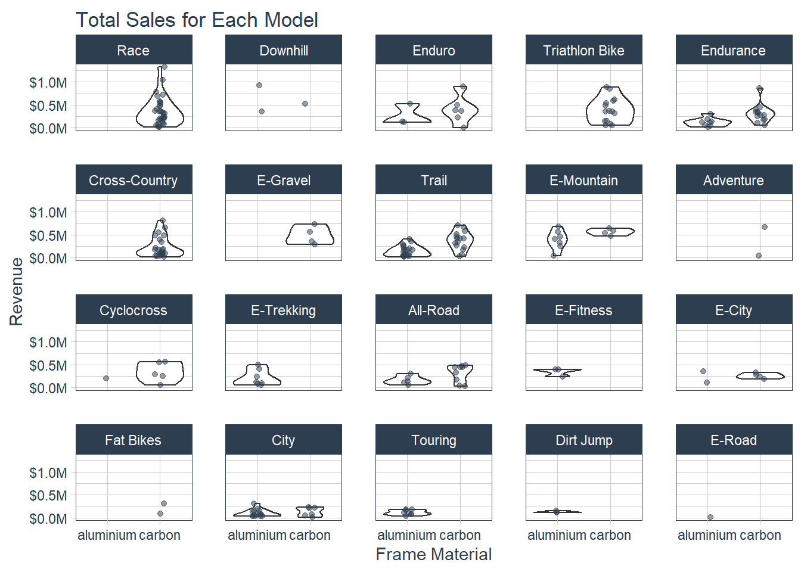

Unit 7
Theory Input
1. Modeling
#install.packages("tidymodels")
#install.packages("broom.mixed")
library(tidyverse)
library(tidyquant)
library(broom)
library(umap)
library(dplyr)
library(tidymodels) # for the parsnip package, along with the rest of tidymodels## -- Attaching packages -------------------------------------- tidymodels 0.1.2 --## v dials 0.0.9 v rsample 0.0.8
## v infer 0.5.4 v tune 0.1.2
## v modeldata 0.1.0 v workflows 0.2.1
## v parsnip 0.1.5 v yardstick 0.0.7
## v recipes 0.1.15## -- Conflicts ----------------------------------------- tidymodels_conflicts() --
## x data.table::between() masks dplyr::between()
## x scales::discard() masks purrr::discard()
## x dplyr::filter() masks stats::filter()
## x xts::first() masks data.table::first(), dplyr::first()
## x recipes::fixed() masks stringr::fixed()
## x dplyr::lag() masks stats::lag()
## x xts::last() masks data.table::last(), dplyr::last()
## x maps::map() masks purrr::map()
## x yardstick::spec() masks vroom::spec(), readr::spec()
## x recipes::step() masks stats::step()
## x data.table::transpose() masks purrr::transpose()# Helper packages
library(broom.mixed) # for converting bayesian models to tidy tibbles## Registered S3 method overwritten by 'broom.mixed':
## method from
## tidy.gamlss broom# Data set
bike_data_tbl_import <- readRDS("00_data/01_bike_sales/02_wrangled_data/bike_orderlines.rds")
bike_data_tbl <- bike_data_tbl_import %>% select(everything()) %>% filter(category_1 != "Gravel")
ggplot(bike_data_tbl,
aes(x = price,
y = weight,
group = category_1,
col = category_1)) +
geom_point() +
geom_smooth(method = lm, se = FALSE) +
scale_color_manual(values=c("#2dc6d6", "#d65a2d", "#d6af2d", "#8a2dd6","#641E16"))## `geom_smooth()` using formula 'y ~ x'
#install.packages("parnsnip")
library(tidymodels)
weight ~ price * category_1## weight ~ price * category_1linear_reg()## Linear Regression Model Specification (regression)lm_mod <- linear_reg() %>%
set_engine("lm")
lm_mod## Linear Regression Model Specification (regression)
##
## Computational engine: lmlm_fit <- lm_mod %>%
fit(weight ~ price * category_1,
data = bike_data_tbl)
tidy(lm_fit)## # A tibble: 8 x 5
## term estimate std.error statistic p.value
## <chr> <dbl> <dbl> <dbl> <dbl>
## 1 (Intercept) 20.1 0.150 134. 0.
## 2 price 0.000137 0.0000384 3.56 3.74e- 4
## 3 category_1Hybrid / City -7.40 0.188 -39.3 1.42e-320
## 4 category_1Mountain -5.50 0.159 -34.6 6.21e-252
## 5 category_1Road -11.5 0.158 -73.1 0.
## 6 price:category_1Hybrid / City -0.00172 0.0000961 -17.9 4.70e- 71
## 7 price:category_1Mountain -0.000539 0.0000414 -13.0 1.94e- 38
## 8 price:category_1Road -0.000341 0.0000403 -8.45 3.21e- 17new_points <- expand.grid(price = 20000,
category_1 = c("E-Bikes", "Hybrid / City", "Mountain", "Road"))
new_points## price category_1
## 1 20000 E-Bikes
## 2 20000 Hybrid / City
## 3 20000 Mountain
## 4 20000 Roadmean_pred <- predict(lm_fit, new_data = new_points)
mean_pred## # A tibble: 4 x 1
## .pred
## <dbl>
## 1 22.8
## 2 -19.0
## 3 6.56
## 4 4.50conf_int_pred <- predict(lm_fit,
new_data = new_points,
type = "conf_int")
conf_int_pred## # A tibble: 4 x 2
## .pred_lower .pred_upper
## <dbl> <dbl>
## 1 21.6 24.1
## 2 -22.2 -15.8
## 3 6.04 7.08
## 4 4.10 4.90plot_data <- new_points %>%
bind_cols(mean_pred) %>%
bind_cols(conf_int_pred)
ggplot(plot_data, aes(x = category_1)) +
geom_point(aes(y = .pred)) +
geom_errorbar(aes(ymin = .pred_lower,
ymax = .pred_upper),
width = .2) +
labs(y = "Bike weight", x = "Category") 
#install.packages("rstanarm")
library(rstanarm)## Loading required package: Rcpp##
## Attaching package: 'Rcpp'## The following object is masked from 'package:rsample':
##
## populate## This is rstanarm version 2.21.1## - See https://mc-stan.org/rstanarm/articles/priors for changes to default priors!## - Default priors may change, so it's safest to specify priors, even if equivalent to the defaults.## - For execution on a local, multicore CPU with excess RAM we recommend calling## options(mc.cores = parallel::detectCores())# set the prior distribution
prior_dist <- rstanarm::student_t(df = 1)
set.seed(123)
# make the parsnip model
bayes_mod <- linear_reg() %>%
set_engine("stan",
prior_intercept = prior_dist,
prior = prior_dist)
# train the model
bayes_fit <- bayes_mod %>%
fit(weight ~ price * category_1,
data = bike_data_tbl)
print(bayes_fit, digits = 5)## parsnip model object
##
## Fit time: 4m 57.6s
## stan_glm
## family: gaussian [identity]
## formula: weight ~ price * category_1
## observations: 14447
## predictors: 8
## ------
## Median MAD_SD
## (Intercept) 20.08939 0.14844
## price 0.00014 0.00004
## category_1Hybrid / City -7.38172 0.19766
## category_1Mountain -5.47925 0.16208
## category_1Road -11.50344 0.15572
## price:category_1Hybrid / City -0.00173 0.00010
## price:category_1Mountain -0.00054 0.00004
## price:category_1Road -0.00035 0.00004
##
## Auxiliary parameter(s):
## Median MAD_SD
## sigma 1.66615 0.01010
##
## ------
## * For help interpreting the printed output see ?print.stanreg
## * For info on the priors used see ?prior_summary.stanregtidy(bayes_fit, conf.int = TRUE)## # A tibble: 8 x 5
## term estimate std.error conf.low conf.high
## <chr> <dbl> <dbl> <dbl> <dbl>
## 1 (Intercept) 20.1 0.148 19.8 20.3
## 2 price 0.000141 0.0000384 0.0000765 0.000206
## 3 category_1Hybrid / City -7.38 0.198 -7.69 -7.07
## 4 category_1Mountain -5.48 0.162 -5.76 -5.22
## 5 category_1Road -11.5 0.156 -11.8 -11.2
## 6 price:category_1Hybrid / City -0.00173 0.0000966 -0.00189 -0.00157
## 7 price:category_1Mountain -0.000545 0.0000420 -0.000614 -0.000472
## 8 price:category_1Road -0.000346 0.0000394 -0.000415 -0.000277bayes_plot_data <-
new_points %>%
bind_cols(predict(bayes_fit, new_data = new_points)) %>%
bind_cols(predict(bayes_fit, new_data = new_points, type = "conf_int"))
ggplot(bayes_plot_data, aes(x = category_1)) +
geom_point(aes(y = .pred)) +
geom_errorbar(aes(ymin = .pred_lower, ymax = .pred_upper), width = .2) +
labs(y = "Bike weight") +
ggtitle("Bayesian model with t(1) prior distribution")
## parsnip model object
##
## Fit time: 1m 39.2s
## stan_glm
## family: gaussian [identity]
## formula: weight ~ price * category_1
## observations: 218
## predictors: 8
## ------
## Median MAD_SD
## (Intercept) 15.24134 1.25450
## price 0.00158 0.00032
## category_1Hybrid / City -2.34716 1.53781
## category_1Mountain -1.52799 1.31226
## category_1Road -6.47532 1.31294
## price:category_1Hybrid / City -0.00310 0.00066
## price:category_1Mountain -0.00180 0.00035
## price:category_1Road -0.00180 0.00033
##
## Auxiliary parameter(s):
## Median MAD_SD
## sigma 1.63413 0.07824
##
## ------
## * For help interpreting the printed output see ?print.stanreg
## * For info on the priors used see ?prior_summary.stanreg2. Preprocessing
I. The data
#install.packages("nycflights13")
#install.packages("skimr")
library(nycflights13)
library(skimr)
set.seed(123)
flight_data <-
flights %>%
mutate(
# Convert the arrival delay to a factor
arr_delay = ifelse(arr_delay >= 30, "late", "on_time"),
arr_delay = factor(arr_delay),
# We will use the date (not date-time) in the recipe below
date = as.Date(time_hour)
) %>%
# Include the weather data
inner_join(weather, by = c("origin", "time_hour")) %>%
# Only retain the specific columns we will use
select(dep_time, flight, origin, dest, air_time, distance,
carrier, date, arr_delay, time_hour) %>%
# Exclude missing data
na.omit() %>%
# For creating models, it is better to have qualitative columns
# encoded as factors (instead of character strings)
mutate_if(is.character, as.factor)
flight_data %>%
count(arr_delay) %>%
mutate(prop = n/sum(n))## # A tibble: 2 x 3
## arr_delay n prop
## <fct> <int> <dbl>
## 1 late 52540 0.161
## 2 on_time 273279 0.839glimpse(flight_data)## Rows: 325,819
## Columns: 10
## $ dep_time <int> 517, 533, 542, 544, 554, 554, 555, 557, 557, 558, 558, 55...
## $ flight <int> 1545, 1714, 1141, 725, 461, 1696, 507, 5708, 79, 301, 49,...
## $ origin <fct> EWR, LGA, JFK, JFK, LGA, EWR, EWR, LGA, JFK, LGA, JFK, JF...
## $ dest <fct> IAH, IAH, MIA, BQN, ATL, ORD, FLL, IAD, MCO, ORD, PBI, TP...
## $ air_time <dbl> 227, 227, 160, 183, 116, 150, 158, 53, 140, 138, 149, 158...
## $ distance <dbl> 1400, 1416, 1089, 1576, 762, 719, 1065, 229, 944, 733, 10...
## $ carrier <fct> UA, UA, AA, B6, DL, UA, B6, EV, B6, AA, B6, B6, UA, UA, A...
## $ date <date> 2013-01-01, 2013-01-01, 2013-01-01, 2013-01-01, 2013-01-...
## $ arr_delay <fct> on_time, on_time, late, on_time, on_time, on_time, on_tim...
## $ time_hour <dttm> 2013-01-01 05:00:00, 2013-01-01 05:00:00, 2013-01-01 05:...flight_data %>%
skimr::skim(dest, carrier)| Name | Piped data |
| Number of rows | 325819 |
| Number of columns | 10 |
| _______________________ | |
| Column type frequency: | |
| factor | 2 |
| ________________________ | |
| Group variables | None |
Variable type: factor
| skim_variable | n_missing | complete_rate | ordered | n_unique | top_counts |
|---|---|---|---|---|---|
| dest | 0 | 1 | FALSE | 104 | ATL: 16771, ORD: 16507, LAX: 15942, BOS: 14948 |
| carrier | 0 | 1 | FALSE | 16 | UA: 57489, B6: 53715, EV: 50868, DL: 47465 |
II. Data Splitting
## Data Splitting
#install.packages("rsample")
library(rsample)
# Fix the random numbers by setting the seed
# This enables the analysis to be reproducible when random numbers are used
set.seed(555)
# Put 3/4 of the data into the training set
data_split <- initial_split(flight_data, prop = 3/4)
# Create data frames for the two sets:
train_data <- training(data_split)
test_data <- testing(data_split)III. Create recipe and roles
library(recipes)
flights_rec <-
recipe(arr_delay ~ ., data = train_data)
flights_rec <-
recipe(arr_delay ~ ., data = train_data) %>%
update_role(flight, time_hour, new_role = "ID")
summary(flights_rec)## # A tibble: 10 x 4
## variable type role source
## <chr> <chr> <chr> <chr>
## 1 dep_time numeric predictor original
## 2 flight numeric ID original
## 3 origin nominal predictor original
## 4 dest nominal predictor original
## 5 air_time numeric predictor original
## 6 distance numeric predictor original
## 7 carrier nominal predictor original
## 8 date date predictor original
## 9 time_hour date ID original
## 10 arr_delay nominal outcome originalIV. Create features
flight_data %>%
distinct(date) %>%
mutate(numeric_date = as.numeric(date)) ## # A tibble: 364 x 2
## date numeric_date
## <date> <dbl>
## 1 2013-01-01 15706
## 2 2013-01-02 15707
## 3 2013-01-03 15708
## 4 2013-01-04 15709
## 5 2013-01-05 15710
## 6 2013-01-06 15711
## 7 2013-01-07 15712
## 8 2013-01-08 15713
## 9 2013-01-09 15714
## 10 2013-01-10 15715
## # ... with 354 more rowsflights_rec <-
recipe(arr_delay ~ ., data = train_data) %>%
update_role(flight, time_hour, new_role = "ID") %>%
step_date(date, features = c("dow", "month")) %>%
step_holiday(date, holidays = timeDate::listHolidays("US")) %>%
step_rm(date)
test_data %>%
distinct(dest) %>%
anti_join(train_data)## Joining, by = "dest"## # A tibble: 1 x 1
## dest
## <fct>
## 1 LEXflights_rec <-
recipe(arr_delay ~ ., data = train_data) %>%
update_role(flight, time_hour, new_role = "ID") %>%
step_date(date, features = c("dow", "month")) %>%
step_holiday(date, holidays = timeDate::listHolidays("US")) %>%
step_rm(date) %>%
step_dummy(all_nominal(), -all_outcomes()) %>%
step_zv(all_predictors())V. Fit a model with a recipe
lr_mod <-
logistic_reg() %>%
set_engine("glm")
library(workflows)
library(parsnip)
flights_wflow <-
workflow() %>%
add_model(lr_mod) %>%
add_recipe(flights_rec)
flights_wflow## == Workflow ====================================================================
## Preprocessor: Recipe
## Model: logistic_reg()
##
## -- Preprocessor ----------------------------------------------------------------
## 5 Recipe Steps
##
## * step_date()
## * step_holiday()
## * step_rm()
## * step_dummy()
## * step_zv()
##
## -- Model -----------------------------------------------------------------------
## Logistic Regression Model Specification (classification)
##
## Computational engine: glmflights_fit <-
flights_wflow %>%
fit(data = train_data)
flights_fit %>%
pull_workflow_fit() %>%
tidy()## # A tibble: 157 x 5
## term estimate std.error statistic p.value
## <chr> <dbl> <dbl> <dbl> <dbl>
## 1 (Intercept) 3.91 2.73 1.43 1.51e- 1
## 2 dep_time -0.00167 0.0000141 -118. 0.
## 3 air_time -0.0439 0.000561 -78.4 0.
## 4 distance 0.00686 0.00150 4.57 4.84e- 6
## 5 date_USChristmasDay 1.12 0.173 6.49 8.45e-11
## 6 date_USColumbusDay 0.474 0.159 2.99 2.81e- 3
## 7 date_USCPulaskisBirthday 0.864 0.139 6.21 5.47e-10
## 8 date_USDecorationMemorialDay 0.279 0.110 2.53 1.15e- 2
## 9 date_USElectionDay 0.696 0.169 4.12 3.82e- 5
## 10 date_USGoodFriday 1.28 0.166 7.71 1.27e-14
## # ... with 147 more rowspredict(flights_fit, test_data)## # A tibble: 81,454 x 1
## .pred_class
## <fct>
## 1 on_time
## 2 on_time
## 3 on_time
## 4 on_time
## 5 on_time
## 6 on_time
## 7 on_time
## 8 on_time
## 9 on_time
## 10 on_time
## # ... with 81,444 more rowsflights_pred <-
predict(flights_fit, test_data, type = "prob") %>%
bind_cols(test_data %>% select(arr_delay, time_hour, flight))
# The data look like:
flights_pred## # A tibble: 81,454 x 5
## .pred_late .pred_on_time arr_delay time_hour flight
## <dbl> <dbl> <fct> <dttm> <int>
## 1 0.0565 0.944 on_time 2013-01-01 05:00:00 1714
## 2 0.0264 0.974 on_time 2013-01-01 06:00:00 79
## 3 0.0481 0.952 on_time 2013-01-01 06:00:00 301
## 4 0.0325 0.967 on_time 2013-01-01 06:00:00 49
## 5 0.0711 0.929 on_time 2013-01-01 06:00:00 1187
## 6 0.0583 0.942 on_time 2013-01-01 06:00:00 4401
## 7 0.0171 0.983 on_time 2013-01-01 06:00:00 1895
## 8 0.0458 0.954 on_time 2013-01-01 06:00:00 135
## 9 0.0221 0.978 on_time 2013-01-01 06:00:00 4646
## 10 0.0502 0.950 on_time 2013-01-01 06:00:00 4144
## # ... with 81,444 more rowsflights_pred %>%
roc_curve(truth = arr_delay, .pred_late) %>%
autoplot()
flights_pred %>%
roc_auc(truth = arr_delay, .pred_late)## # A tibble: 1 x 3
## .metric .estimator .estimate
## <chr> <chr> <dbl>
## 1 roc_auc binary 0.7653. Evaluating
library(tidymodels)
library(modeldata)I. The Data
data(cells, package = "modeldata")
cells## # A tibble: 2,019 x 58
## case class angle_ch_1 area_ch_1 avg_inten_ch_1 avg_inten_ch_2 avg_inten_ch_3
## <fct> <fct> <dbl> <int> <dbl> <dbl> <dbl>
## 1 Test PS 143. 185 15.7 4.95 9.55
## 2 Train PS 134. 819 31.9 207. 69.9
## 3 Train WS 107. 431 28.0 116. 63.9
## 4 Train PS 69.2 298 19.5 102. 28.2
## 5 Test PS 2.89 285 24.3 112. 20.5
## 6 Test WS 40.7 172 326. 654. 129.
## 7 Test WS 174. 177 260. 596. 124.
## 8 Test PS 180. 251 18.3 5.73 17.2
## 9 Test WS 18.9 495 16.1 89.5 13.7
## 10 Test WS 153. 384 17.7 89.9 20.4
## # ... with 2,009 more rows, and 51 more variables: avg_inten_ch_4 <dbl>,
## # convex_hull_area_ratio_ch_1 <dbl>, convex_hull_perim_ratio_ch_1 <dbl>,
## # diff_inten_density_ch_1 <dbl>, diff_inten_density_ch_3 <dbl>,
## # diff_inten_density_ch_4 <dbl>, entropy_inten_ch_1 <dbl>,
## # entropy_inten_ch_3 <dbl>, entropy_inten_ch_4 <dbl>,
## # eq_circ_diam_ch_1 <dbl>, eq_ellipse_lwr_ch_1 <dbl>,
## # eq_ellipse_oblate_vol_ch_1 <dbl>, eq_ellipse_prolate_vol_ch_1 <dbl>,
## # eq_sphere_area_ch_1 <dbl>, eq_sphere_vol_ch_1 <dbl>,
## # fiber_align_2_ch_3 <dbl>, fiber_align_2_ch_4 <dbl>,
## # fiber_length_ch_1 <dbl>, fiber_width_ch_1 <dbl>, inten_cooc_asm_ch_3 <dbl>,
## # inten_cooc_asm_ch_4 <dbl>, inten_cooc_contrast_ch_3 <dbl>,
## # inten_cooc_contrast_ch_4 <dbl>, inten_cooc_entropy_ch_3 <dbl>,
## # inten_cooc_entropy_ch_4 <dbl>, inten_cooc_max_ch_3 <dbl>,
## # inten_cooc_max_ch_4 <dbl>, kurt_inten_ch_1 <dbl>, kurt_inten_ch_3 <dbl>,
## # kurt_inten_ch_4 <dbl>, length_ch_1 <dbl>, neighbor_avg_dist_ch_1 <dbl>,
## # neighbor_min_dist_ch_1 <dbl>, neighbor_var_dist_ch_1 <dbl>,
## # perim_ch_1 <dbl>, shape_bfr_ch_1 <dbl>, shape_lwr_ch_1 <dbl>,
## # shape_p_2_a_ch_1 <dbl>, skew_inten_ch_1 <dbl>, skew_inten_ch_3 <dbl>,
## # skew_inten_ch_4 <dbl>, spot_fiber_count_ch_3 <int>,
## # spot_fiber_count_ch_4 <dbl>, total_inten_ch_1 <int>,
## # total_inten_ch_2 <dbl>, total_inten_ch_3 <int>, total_inten_ch_4 <int>,
## # var_inten_ch_1 <dbl>, var_inten_ch_3 <dbl>, var_inten_ch_4 <dbl>,
## # width_ch_1 <dbl>cells %>%
count(class) %>%
mutate(prop = n/sum(n))## # A tibble: 2 x 3
## class n prop
## <fct> <int> <dbl>
## 1 PS 1300 0.644
## 2 WS 719 0.356II. Data splitting
set.seed(123)
cell_split <- initial_split(cells %>% select(-case),
strata = class)
cell_train <- training(cell_split)
cell_test <- testing(cell_split)
nrow(cell_train)## [1] 1515## 1515
nrow(cell_train)/nrow(cells)## [1] 0.7503715## 0.7503715
# training set proportions by class
cell_train %>%
count(class) %>%
mutate(prop = n/sum(n))## # A tibble: 2 x 3
## class n prop
## <fct> <int> <dbl>
## 1 PS 975 0.644
## 2 WS 540 0.356## # A tibble: 2 x 3
## class n prop
## <fct> <int> <dbl>
## 1 PS 975 0.644
## 2 WS 540 0.356
# test set proportions by class
cell_test %>%
count(class) %>%
mutate(prop = n/sum(n))## # A tibble: 2 x 3
## class n prop
## <fct> <int> <dbl>
## 1 PS 325 0.645
## 2 WS 179 0.355## # A tibble: 2 x 3
## class n prop
## <fct> <int> <dbl>
## 1 PS 325 0.645
## 2 WS 179 0.355III. Modeling
#install.packages("ranger")
library(ranger)
rf_mod <-
rand_forest(trees = 1000) %>%
set_engine("ranger") %>%
set_mode("classification")
set.seed(234)
rf_fit <-
rf_mod %>%
fit(class ~ ., data = cell_train)
rf_fit## parsnip model object
##
## Fit time: 3.7s
## Ranger result
##
## Call:
## ranger::ranger(x = maybe_data_frame(x), y = y, num.trees = ~1000, num.threads = 1, verbose = FALSE, seed = sample.int(10^5, 1), probability = TRUE)
##
## Type: Probability estimation
## Number of trees: 1000
## Sample size: 1515
## Number of independent variables: 56
## Mtry: 7
## Target node size: 10
## Variable importance mode: none
## Splitrule: gini
## OOB prediction error (Brier s.): 0.1220191rf_training_pred <-
predict(rf_fit, cell_train) %>%
bind_cols(predict(rf_fit, cell_train, type = "prob")) %>%
# Add the true outcome data back in
bind_cols(cell_train %>%
select(class))
rf_training_pred %>% # training set predictions
roc_auc(truth = class, .pred_PS)## # A tibble: 1 x 3
## .metric .estimator .estimate
## <chr> <chr> <dbl>
## 1 roc_auc binary 1.00## # A tibble: 1 x 3
## .metric .estimator .estimate
## <chr> <chr> <dbl>
## 1 roc_auc binary 1.00
rf_training_pred %>% # training set predictions
accuracy(truth = class, .pred_class)## # A tibble: 1 x 3
## .metric .estimator .estimate
## <chr> <chr> <dbl>
## 1 accuracy binary 0.994## # A tibble: 1 x 3
## .metric .estimator .estimate
## <chr> <chr> <dbl>
## 1 accuracy binary 0.993
rf_testing_pred <-
predict(rf_fit, cell_test) %>%
bind_cols(predict(rf_fit, cell_test, type = "prob")) %>%
bind_cols(cell_test %>% select(class))
rf_testing_pred %>% # test set predictions
roc_auc(truth = class, .pred_PS)## # A tibble: 1 x 3
## .metric .estimator .estimate
## <chr> <chr> <dbl>
## 1 roc_auc binary 0.909## # A tibble: 1 x 3
## .metric .estimator .estimate
## <chr> <chr> <dbl>
## 1 roc_auc binary 0.909
rf_testing_pred %>% # test set predictions
accuracy(truth = class, .pred_class)## # A tibble: 1 x 3
## .metric .estimator .estimate
## <chr> <chr> <dbl>
## 1 accuracy binary 0.841## # A tibble: 1 x 3
## .metric .estimator .estimate
## <chr> <chr> <dbl>
## 1 accuracy binary 0.837IV. Estimating performance
V. Resampling to the rescue
```{V. Resampling to the rescue}
### VI. Fit a model with resampling
## 4. Tuning
### I. The cell image data, revisited
### II. Predicting image segmentation, but better
### III. Tuning hyperparameters
### IV. Model tuning with a grid
### V. Finalizing our model
### VI. Exploring results
### VII. The last fit
# Chapter 8 - Business Case
```r
# Standard
library(tidyverse)
# Modeling
library(parsnip)
# Preprocessing & Sampling
library(recipes)
library(rsample)
# Modeling Error Metrics
library(yardstick)
#install.packages("rpart.plot")
# Plotting Decision Trees
library(rpart.plot)## Loading required package: rpart##
## Attaching package: 'rpart'## The following object is masked from 'package:dials':
##
## prune# Modeling ----------------------------------------------------------------
bike_orderlines_tbl <- readRDS("00_data/01_bike_sales/01_raw_data/bike_orderlines.rds")
glimpse(bike_orderlines_tbl)## Rows: 15,644
## Columns: 18
## $ order_id <dbl> 1, 1, 2, 2, 3, 3, 3, 3, 3, 4, 5, 5, 5, 5, 6, 6, 6, 6...
## $ order_line <dbl> 1, 2, 1, 2, 1, 2, 3, 4, 5, 1, 1, 2, 3, 4, 1, 2, 3, 4...
## $ order_date <dttm> 2015-01-07, 2015-01-07, 2015-01-10, 2015-01-10, 201...
## $ model <chr> "Spectral CF 7 WMN", "Ultimate CF SLX Disc 8.0 ETAP"...
## $ model_year <dbl> 2021, 2020, 2021, 2019, 2020, 2020, 2020, 2021, 2020...
## $ category_1 <chr> "Mountain", "Road", "Mountain", "Road", "Mountain", ...
## $ category_2 <chr> "Trail", "Race", "Trail", "Triathlon Bike", "Dirt Ju...
## $ category_3 <chr> "Spectral", "Ultimate", "Neuron", "Speedmax", "Stitc...
## $ price <dbl> 3119, 5359, 2729, 1749, 1219, 1359, 2529, 1559, 3899...
## $ quantity <dbl> 1, 1, 1, 1, 1, 1, 1, 1, 1, 1, 1, 2, 1, 1, 1, 1, 1, 1...
## $ total_price <dbl> 3119, 5359, 2729, 1749, 1219, 1359, 2529, 1559, 3899...
## $ frame_material <chr> "carbon", "carbon", "carbon", "carbon", "aluminium",...
## $ weight <dbl> 13.80, 7.44, 14.06, 8.80, 11.50, 8.80, 8.20, 8.85, 1...
## $ url <chr> "https://www.canyon.com/en-de/mountain-bikes/trail-b...
## $ bikeshop <chr> "AlexandeRad", "AlexandeRad", "WITT-RAD", "WITT-RAD"...
## $ location <chr> "Hamburg, Hamburg", "Hamburg, Hamburg", "Bremen, Bre...
## $ lat <dbl> 53.57532, 53.57532, 53.07379, 53.07379, 48.78234, 48...
## $ lng <dbl> 10.015340, 10.015340, 8.826754, 8.826754, 9.180819, ...model_sales_tbl <- bike_orderlines_tbl %>%
select(total_price, model, category_2, frame_material) %>%
group_by(model, category_2, frame_material) %>%
summarise(total_sales = sum(total_price)) %>%
ungroup() %>%
arrange(desc(total_sales))## `summarise()` regrouping output by 'model', 'category_2' (override with `.groups` argument)model_sales_tbl %>%
mutate(category_2 = as_factor(category_2) %>%
fct_reorder(total_sales, .fun = max) %>%
fct_rev()) %>%
ggplot(aes(frame_material, total_sales)) +
geom_violin() +
geom_jitter(width = 0.1, alpha = 0.5, color = "#2c3e50") +
#coord_flip() +
facet_wrap(~ category_2) +
scale_y_continuous(labels = scales::dollar_format(scale = 1e-6, suffix = "M", accuracy = 0.1)) +
tidyquant::theme_tq() +
labs(
title = "Total Sales for Each Model",
x = "Frame Material", y = "Revenue"
)## Warning in max(data$density): kein nicht-fehlendes Argument für max; gebe -Inf
## zurück## Warning: Computation failed in `stat_ydensity()`:
## replacement has 1 row, data has 0## Warning in max(data$density): kein nicht-fehlendes Argument für max; gebe -Inf
## zurück## Warning: Computation failed in `stat_ydensity()`:
## replacement has 1 row, data has 0## Warning in max(data$density): kein nicht-fehlendes Argument für max; gebe -Inf
## zurück## Warning: Computation failed in `stat_ydensity()`:
## replacement has 1 row, data has 0## Warning in max(data$density): kein nicht-fehlendes Argument für max; gebe -Inf
## zurück## Warning: Computation failed in `stat_ydensity()`:
## replacement has 1 row, data has 0 ###
bike_features_tbl <- readRDS("00_data/01_bike_sales/01_raw_data/bike_features_tbl.rds")
glimpse(bike_features_tbl)## Rows: 231
## Columns: 67
## $ bike_id <dbl> 2875, 2873, 2874, 2876, 2877, 2225, 209...
## $ model <chr> "Aeroad CF SL Disc 8.0 Di2", "Aeroad CF...
## $ model_year <dbl> 2020, 2020, 2020, 2020, 2020, 2019, 201...
## $ frame_material <chr> "carbon", "carbon", "carbon", "carbon",...
## $ weight <dbl> 7.60, 7.27, 7.10, 7.73, 7.83, 6.80, 6.8...
## $ price <dbl> 4579, 6919, 6429, 5069, 3609, 6139, 535...
## $ category_1 <chr> "Road", "Road", "Road", "Road", "Road",...
## $ category_2 <chr> "Race", "Race", "Race", "Race", "Race",...
## $ category_3 <chr> "Aeroad", "Aeroad", "Aeroad", "Aeroad",...
## $ gender <chr> "unisex", "unisex", "unisex", "unisex",...
## $ url <chr> "https://www.canyon.com/en-de/road-bike...
## $ Frame <chr> "Canyon Aeroad CF SL Disc", "Canyon Aer...
## $ Fork <chr> "Canyon FK0041 CF SLX Disc", "Canyon FK...
## $ `Rear Derailleur` <chr> "Shimano Ultegra Di2 R8050 SS", "SRAM R...
## $ `Front Derailleur` <chr> "Shimano Ultegra Di2 R8050", "SRAM RED ...
## $ Cassette <chr> "Shimano Ultegra R8000, 11-speed, 11-28...
## $ Crank <chr> "Shimano Ultegra R8000", "SRAM RED D1",...
## $ `Bottom bracket` <chr> "Shimano Pressfit BB72", "SRAM Pressfit...
## $ `Thru Axle` <chr> "Canyon Thru Axle", "Canyon Thru Axle",...
## $ Cockpit <chr> "Canyon H36 Aerocockpit CF", "Canyon H3...
## $ Saddle <chr> "Selle Italia SLR", "Selle Italia SLR",...
## $ Seatpost <chr> "Canyon S27 Aero VCLS CF", "Canyon S27 ...
## $ Pedals <chr> "None included", "None included", "None...
## $ `Derailleur hanger` <chr> "Shop Derailleur Hanger GP0211-01", "Sh...
## $ Battery <chr> "", "SRAM eTap Powerpack", "", "SRAM eT...
## $ Brake <chr> "", "", "", "", "", "", "", "", "", "",...
## $ `Shift Lever` <chr> "", "", "", "", "", "", "Shimano Di2 Re...
## $ Chain <chr> "", "", "", "", "", "", "Shimano CN-HG9...
## $ Stem <chr> "", "", "", "", "", "", "", "Canyon V13...
## $ Handlebar <chr> "", "", "", "", "", "", "", "Canyon H16...
## $ Headset <chr> "", "", "", "", "", "", "", "", "", "",...
## $ Motor <chr> "", "", "", "", "", "", "", "", "", "",...
## $ `Battery Charger` <chr> "", "", "", "", "", "", "", "", "", "",...
## $ `Flat Pedals` <chr> "", "", "", "", "", "", "", "", "", "",...
## $ Chainguard <chr> "", "", "", "", "", "", "", "", "", "",...
## $ `Aero Bar` <chr> "", "", "", "", "", "", "", "", "", "",...
## $ `Brake Lever / Master` <chr> "", "", "", "", "", "", "", "", "", "",...
## $ `Wheel Tire System` <chr> "", "", "", "", "", "", "", "", "", "",...
## $ `Suspension Fork` <chr> "", "", "", "", "", "", "", "", "", "",...
## $ `Disc Brake` <chr> "", "", "", "", "", "", "", "", "", "",...
## $ Grips <chr> "", "", "", "", "", "", "", "", "", "",...
## $ Chainring <chr> "", "", "", "", "", "", "", "", "", "",...
## $ Display <chr> "", "", "", "", "", "", "", "", "", "",...
## $ Modeswitch <chr> "", "", "", "", "", "", "", "", "", "",...
## $ `Rear Shock` <chr> "", "", "", "", "", "", "", "", "", "",...
## $ Light <chr> "", "", "", "", "", "", "", "", "", "",...
## $ Fender <chr> "", "", "", "", "", "", "", "", "", "",...
## $ `Bike Racks` <chr> "", "", "", "", "", "", "", "", "", "",...
## $ `Brake 1` <chr> "", "", "", "", "", "SRAM S-900 Direct ...
## $ `Brake 2` <chr> "", "", "", "", "", "SRAM S-900 Direct ...
## $ `Shift-/ Brake Lever 1` <chr> "Shimano Ultegra Di2 R8070, 11-speed", ...
## $ `Shift-/ Brake Lever 2` <chr> "Shimano Ultegra Di2 R8070, 11-speed", ...
## $ `Wheel 1` <chr> "DT Swiss ARC 1400 Dicut", "DT Swiss AR...
## $ `Wheel 2` <chr> "DT Swiss ARC 1400 Dicut", "DT Swiss AR...
## $ `Tyre 1` <chr> "Continental Grand Prix 5000 / Attack ...
## $ `Tyre 2` <chr> "Continental Grand Prix 5000, 25 mm", "...
## $ `Handlebar Tape 1` <chr> "Canyon Ergospeed Gel", "Canyon Ergospe...
## $ `Handlebar Tape 2` <chr> "Canyon bar-end plug", "Canyon bar-end ...
## $ `Manuals and Accessories 1` <chr> "Canyon tool case", "Canyon tool case",...
## $ `Manuals and Accessories 2` <chr> "DT Swiss warranty & intended use manua...
## $ `Manuals and Accessories 3` <chr> "Canyon starter box", "Canyon starter b...
## $ `Manuals and Accessories 4` <chr> "", "", "", "", "", "", "", "", "", "BA...
## $ `Manuals and Accessories 5` <chr> "", "", "", "", "", "", "", "", "", "",...
## $ `Manuals and Accessories 6` <chr> "", "", "", "", "", "", "", "", "", "",...
## $ `Manuals and Accessories 7` <chr> "", "", "", "", "", "", "", "", "", "",...
## $ `Manuals and Accessories 8` <chr> "", "", "", "", "", "", "", "", "", "",...
## $ `Brake Rotor` <list> ["Shimano RT800", "SRAM Centerline X",...bike_features_tbl <- bike_features_tbl %>%
select(model:url, `Rear Derailleur`, `Shift Lever`) %>%
mutate(
`shimano dura-ace` = `Rear Derailleur` %>% str_to_lower() %>% str_detect("shimano dura-ace ") %>% as.numeric(),
`shimano ultegra` = `Rear Derailleur` %>% str_to_lower() %>% str_detect("shimano ultegra ") %>% as.numeric(),
`shimano 105` = `Rear Derailleur` %>% str_to_lower() %>% str_detect("shimano 105 ") %>% as.numeric(),
`shimano tiagra` = `Rear Derailleur` %>% str_to_lower() %>% str_detect("shimano tiagra ") %>% as.numeric(),
`Shimano sora` = `Rear Derailleur` %>% str_to_lower() %>% str_detect("shimano sora") %>% as.numeric(),
`shimano deore` = `Rear Derailleur` %>% str_to_lower() %>% str_detect("shimano deore(?! xt)") %>% as.numeric(),
`shimano slx` = `Rear Derailleur` %>% str_to_lower() %>% str_detect("shimano slx") %>% as.numeric(),
`shimano grx` = `Rear Derailleur` %>% str_to_lower() %>% str_detect("shimano grx") %>% as.numeric(),
`Shimano xt` = `Rear Derailleur` %>% str_to_lower() %>% str_detect("shimano deore xt |shimano xt ") %>% as.numeric(),
`Shimano xtr` = `Rear Derailleur` %>% str_to_lower() %>% str_detect("shimano xtr") %>% as.numeric(),
`Shimano saint` = `Rear Derailleur` %>% str_to_lower() %>% str_detect("shimano saint") %>% as.numeric(),
`SRAM red` = `Rear Derailleur` %>% str_to_lower() %>% str_detect("sram red") %>% as.numeric(),
`SRAM force` = `Rear Derailleur` %>% str_to_lower() %>% str_detect("sram force") %>% as.numeric(),
`SRAM rival` = `Rear Derailleur` %>% str_to_lower() %>% str_detect("sram rival") %>% as.numeric(),
`SRAM apex` = `Rear Derailleur` %>% str_to_lower() %>% str_detect("sram apex") %>% as.numeric(),
`SRAM xx1` = `Rear Derailleur` %>% str_to_lower() %>% str_detect("sram xx1") %>% as.numeric(),
`SRAM x01` = `Rear Derailleur` %>% str_to_lower() %>% str_detect("sram x01|sram xo1") %>% as.numeric(),
`SRAM gx` = `Rear Derailleur` %>% str_to_lower() %>% str_detect("sram gx") %>% as.numeric(),
`SRAM nx` = `Rear Derailleur` %>% str_to_lower() %>% str_detect("sram nx") %>% as.numeric(),
`SRAM sx` = `Rear Derailleur` %>% str_to_lower() %>% str_detect("sram sx") %>% as.numeric(),
`SRAM sx` = `Rear Derailleur` %>% str_to_lower() %>% str_detect("sram sx") %>% as.numeric(),
`Campagnolo potenza` = `Rear Derailleur` %>% str_to_lower() %>% str_detect("campagnolo potenza") %>% as.numeric(),
`Campagnolo super record` = `Rear Derailleur` %>% str_to_lower() %>% str_detect("campagnolo super record") %>% as.numeric(),
`shimano nexus` = `Shift Lever` %>% str_to_lower() %>% str_detect("shimano nexus") %>% as.numeric(),
`shimano alfine` = `Shift Lever` %>% str_to_lower() %>% str_detect("shimano alfine") %>% as.numeric()
) %>%
# Remove original columns
select(-c(`Rear Derailleur`, `Shift Lever`)) %>%
# Set all NAs to 0
mutate_if(is.numeric, ~replace(., is.na(.), 0))
# 2.0 TRAINING & TEST SETS ----
bike_features_tbl <- bike_features_tbl %>%
mutate(id = row_number()) %>%
select(id, everything(), -url)